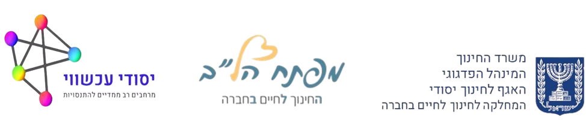

מסכמים ופותחים את הלב
פעילות שיח ושיתוף לסיכום מחצית, שנה, חופשה או כל אירוע משמעותי אחר
פעילות זו מזמינה אתכם להתבונן בתקופות, חוויות ואירועים שעברתם, ולהתחבר לרגשות, מחשבות, החלטות והתנהגויות שעוצבו במהלכן.
באמצעות בחירת מילה משמעותית ושיתוף מעמיק, נכיר טוב יותר את עצמנו ואת האחרים.